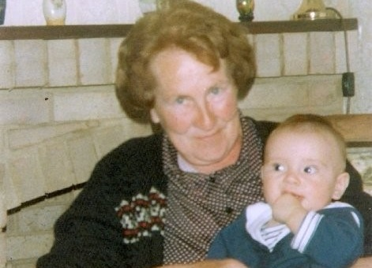

| CATEGORIES | TV | RADIO | COMMUNICATE | WHERE I LIVE | INDEX | SEARCH | |||||||
|
| You are in: UK | |||||||||||||||||||||||||||||||||||||||||||||||||||||||||||||||||||||||||||||||||||||||||||||||||||||||||||||||||||||||||||||||||||||||||||||||||||||||||||||||||||||||||||
|
Friday, 20 April, 1990
Joshua is born

Joshua-Henry Ignatious Montague-Munson - 1990-present
Joshua was born in Nottingham on this day in 1990. An adored son and devoted brother, his sister, Hen, reports "Above everything of course he was super kind and caring and always wanted to protect me". However, young Joshua was not all he seemed... Question: According to Hen, of which of these crimes was a young Joshua guilty? He always made me ask for snacks and more computer time as thought my parents would say yes to me He ate a whole chocolate orange before Christmas dinner - spoiling it |
Gerida and Phil said to be 'thrilled' and hope that Joshua will go on to play football for England
Top UK stories now:
Links to more UK stories are at the foot of the page.
|
|||||||||||||||||||||||||||||||||||||||||||||||||||||||||||||||||||||||||||||||||||||||||||||||||||||||||||||||||||||||||||||||||||||||||||||||||||||||||||||||||||||||||
|
Links to more UK stories |
 |
|
|||
| ----------------------------------------------------------------------------------
To BBC Sport>> | To BBC Weather>> | To BBC World Service>> ---------------------------------------------------------------------------------- � MMIII | News Sources | Privacy 
|